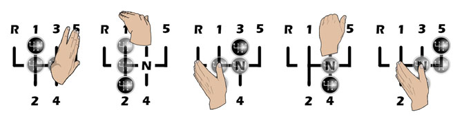
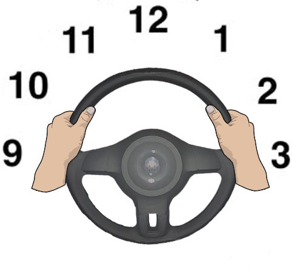
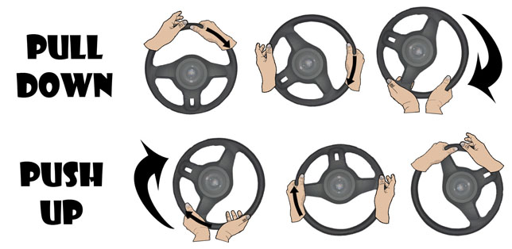
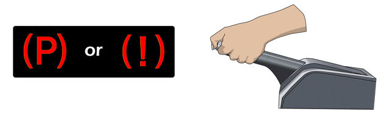
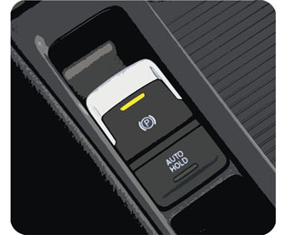
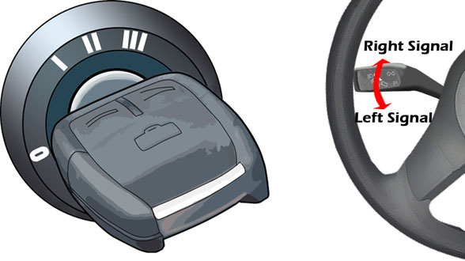

Use in conjunction with the clutch to move through the gears.
Change gears by:
- Clutch down - Gas off
- Change Gear
- Clutch up in two movements ie. up to biting point then release
- Gas on
Low gears have more power but less speed
Move up through the gears when the revs increase. Refer to the rev counter or the sound of the engine
Use more gas (revs) before changing when going uphill
Practice relaxed changes facing your palm in the intended direction

Move the gearstick in straight lines, left and right, up and down. Pushing the gearstick diagonally results in mistakes
Steering Wheel
Imagine a clock face and hold at the ten and two or nine and three position

Keep two hands on the wheel unless one is needed to operate a control eg.gears
Develop intuitive steering, looking well ahead and letting your hands follow your eyes
Try to use the push/pull technique to steer. This is not an official requirement but with a little practice, it can provide great steering control.

Whatever the technique, your movements must be steady and smooth.
Handbrake
Also known as the parking brake
Secures the car when stationary
Operates on the rear wheels
Light on the dashboard shows when handbrake is on. Make sure the light has gone out when you set off.

To Release-Lift the lever a little and press the button to detatch the ratchet mechanism. Lower the hand brake lever completely.
To Apply-Press the button, lift the lever firmly and release the button. (According to some manufacturers you are not required to press the button but lift the lever through the ratchet so that it clicks. Your instructor will explain which method to use or check the car manual).

Electronic Handbrake
Some cars feature electronic handbrakes which are operated by a switch. They can usually be released manually or automatically as the clutch reaches the biting point. Your instructor will teach you how to use your vehicles particular mechanism or refer to the car manual.
Indicators (Signals)
Use to show other road users which direction you are going to take.
You should be aware of traffic behind you before you signal, so check the interior mirror and the door mirror on the side you will be turning. This will give you a broad view and you will know to use appropriate caution where there is closely following or passing traffic.
The indicator stalk can be on the left or the right of the steering wheel
Most indicators have a self cancelling mechanism. After a turn, when the wheels straighten, the signal will cancel. However, depending on the shape of turn, it may cancel prematurely or not at all. Listen for an audible ticking and look for a flashing on the dashboard to know whether the indicator is on

Ignition
The most common ignition switch mechanism is a key as illustrated. However, some cars use a button.
Many mechanisms won’t allow the engine to start unless the clutch is depressed. If your vehicle doesnt have this safety feature, make sure neutral is selected before starting the engine, otherwise the car will lurch and cut out as the key is turned.
If you stall, start the car quickly by being familiar with the vehicles re starting procedure.
Common Ignition key settings:
0-Off or Lock. The key is inserted and removed from this position. On many cars, a steering lock is activated when the key is removed
1-Accessories-Allows power to the radio, fan and windows
2-Ignition On-Warning lights on dashboard will illuminate/ Allows power to lights/Ignition and charging system will activate
3-Engine Start-Turns the starter motor to get the engine going. Turn and release. The key will spring back to setting 2